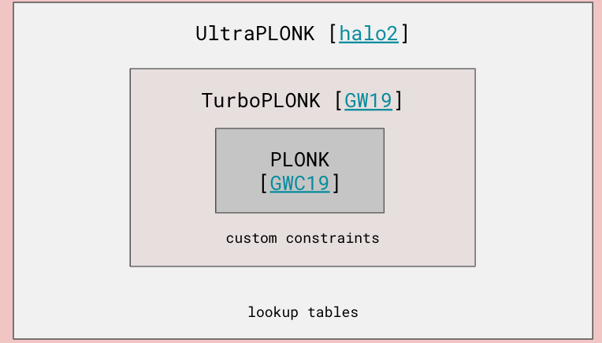
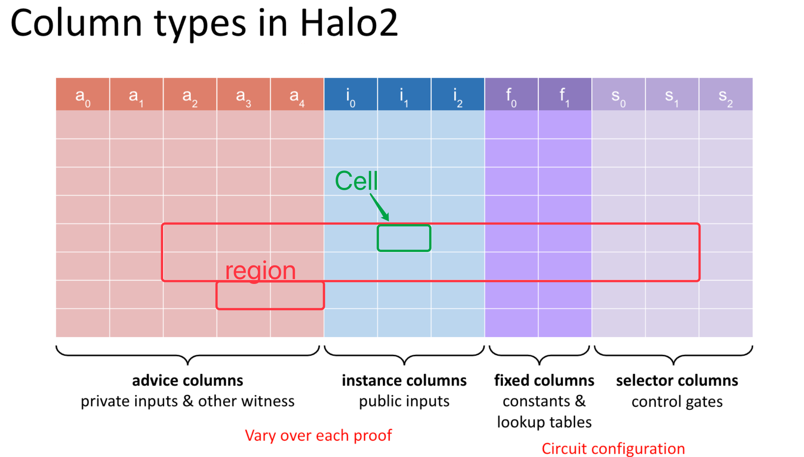
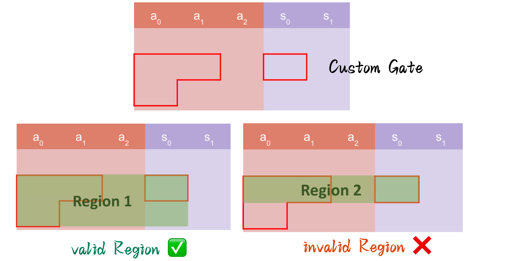
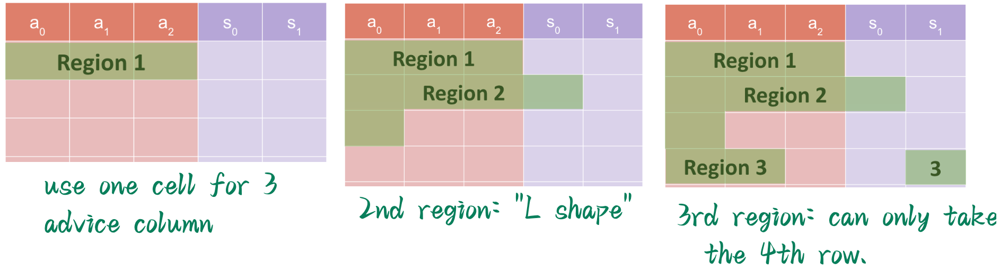
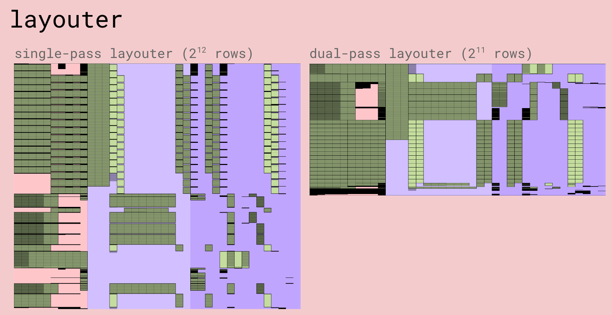

- 作者: @Po@Ethstorage.io / @Demian / @Keep
- 时间: 2023-10-18
- 校对: @Po@Ethstorage.io / @Demian
Halo2核心概念
在前面的 prerequisite 课程中，我们学习了 PLONK 协议及其 lookup table 优化，在本节我们将会以 halo2 这个 Rust library 为基础，详细讲解 Halo2 的相关基本概念。
Halo2 电路结构
我们知道，在 Vanilla PLONK 协议 中，门约束系统相对固定和局限，表现力并不强：
为了支持更复杂和更高阶的运算，halo2 中引入了 custom gate 和 lookup table，这使得约束系统中的约束并不限定在某一行上的变量，custom gate 可以任意指定约束需要的计算。 1
如下图，可以清晰地看到 PLONK 每个版本的演进，从而让 halo 2 能对 custom constraints 和 lookup table 进行支持：
在一般的电路代码结构中，都会有输入、输出、约束等必要构件，在 halo2 中也不例外。只不过，不像 R1CS 那般每个约束都严丝合缝地写成 的格式，halo2 中，电路的 arithmetization（电路中的 expression） 可以形象地看作是成一张矩形表 (table)，所有的约束则可以通过在这张表中规划区域(region)，放置单元格(cells) 来构造。
The halo2 Book: The language that we use to express circuits for a particular proof system is called an arithmetization. Usually, an arithmetization will define circuits in terms of polynomial constraints on variables over a field. 2
如下图可以看到：
- 电路表整体由单元（
cell）、列（Column）和行（Row）组成， - 相邻的
cell、row和colum的任意组合可以构成region - 列又可以分为三种类型：
advice，instance和selector，- 其中
advice/instancecolumns 在同一个电路中填入的值可以不一样 fixed和selectorcolumns 在电路 preprocessed 阶段生成，同一个电路填入的值是一样的，可以视为是电路结构固定的一部分
- 其中
下面，我们会分别详细讲解各部分组件的用途及使用方法 3
Columns
我们可以将电路的输入和输出概念化为给定有限域 上 列 行的矩阵
下面我们来详细讲解各个 columns 的含义和用途：
instance columns ：包含了 Prover/Verifier 之间共享的输入，通常用于公共输入 (public inputs)
- 例如 SHA256 的结果
- Merkle Tree 的根
advice columns：包含了 private input & 电路运行中所需的中间变量，即witness,这部分只有知道
fixed columns ：包含在 key generation 阶段设置的 preprocessed values，可以视为是电路结构固定的一部分，也是可以被 pre-compute 的
- 如电路中 hardcoded constant
- 查找表 Lookup table column
selector columns ：即选择器，同样是在 key generation 阶段设置的 preprocessed values
有些教程中也会直接将 selector columns 放入 fixed columns 中，这完全正确！因为 Selector 就是特殊的 fixed columns
Tips: 同一行可以支持若干种不同的约束, 比如三元三次, 或者三元二次, 可以通过 selector 来选择具体需要满足哪个约束。比如有 3 个 custom gate, 可以只满足其中一个就 OK , 或者满足其中的 2 个，非常灵活
Rows
矩阵中的行数通常是 2 的幂，受有限域 F 的大小限制； 行数对应于 Plonkish 算术化(arithmetization) 中的 n-th 单位根(nth root of unity)。 约束适用于所有行(apply to all the rows)，但可以通过选择器列中定义的 Selector 启用/禁用。 4
Gate
门(Gate) 通常是由一组约束构成，这组约束通常受 selector 控制。 Halo2 提供两种类型的门：
- 标准门(Standard gate)：标准门支持通用算术，例如域乘法和除法
- 自定义门(Custom gate)：自定义门更具表现力，能够支持电路中的专门操作； 下面的斐波那契电路显示了自定义门的示例（请注意，启用选择器时，门将应用于每一行）
Copy constraint
Plonk 的「拷贝约束」是通过「置换证明」（Permutation Argument）来实现，即把表格中需要约束相等的那些值进行循环换位，然后证明换位后的表格和原来的表格完全相等。
Permutation Argument 提供了一种 cheap 的方式来证明集合中部分值的相等性。
如下图，在 Fibonacci 示例中，我们会通过 copy_advice API 强制约束红色框、蓝色框的 2 对值分别相等
Region
如果是第一次看视频或者读相关文档，你可能会发现 Region 是一个略显抽象的概念，不过没关系，向下读！
在 halo2 中我们不会直接约束一整个电路的行和列，而是将整个电路划分为由相邻的行和列组成的 region，在 region 中可以采用相对偏移(relative offsets)的方式访问 Cell。 在一个 region 中，我们只关心 cells 之间的相对关系
如果两个约束没有关系，或者您也不关心两个 “cell” 之间如何相互作用的话，那么就应该将它们分别定义在 2 个不同的 regions 中，如此就可以将控制权交给halo2默认的layouter，让 layouter 去优化整体电路 region 分布，比如合并不同的region到一行来减小电路的规模（layouter 后面会讲解）。
因此，并不推荐将整个电路的逻辑都塞进同一个庞大的 region，您应该尝试将其尽可能分解为逻辑清晰、结构简单的 regions。 5
Layouter
看完了 region 的定义和讲解后，是不是还是有点不得要领？下面我们会介绍如何使用 Layouter 去布局 region，看完后也许你会对 region 有更进一步的认识。
layouter 作用在 assignment （电路赋值）期间，即当你用 Witness 去填充整个 Circuit table 时使用。实际中，layouter一般不会一下子填满整个 table， 而是每次都会创建一个 region，并在其包含的单元格中填入相应的witness值。
为了保证每个 gate 能当访问到其所需的所有单元格，一般而言对 gate 所在的 region 进行电路布局时，region 需遵循如下规则： region 不需要与 custom gate 具有相同的形状，但 region 必须覆盖所有相关的 custom gate
比如上面的例子，在最上方的电路包含两个 custom gate (红色边框标识)，可以创建如下两种region:
-
左边的浅绿色矩形 Region 是 Valid Region ✅ :
- 在 Region 中做的赋值 assignments 已经完全覆盖了左边的
Custom Gate所需要的 - 假设在 selector col 中，上面的 , 下面的 ，则说明用到了左边的 3 个 Cell
- 在 Region 中做的赋值 assignments 已经完全覆盖了左边的
-
而右边的浅绿色矩形 Region 是 invalid Region ❌:
- 它没有覆盖与
Custom Gate相关的所有单元格。 并且它并没有 assignCustom Gate所需的所有单元格 - 如果您打开了 selector，Region 应该覆盖由
Custom Gate控制的所有单元格。
- 它没有覆盖与
目前在 halo2 中有 2 种 Layouter 可供选择：
- SimpleFloorPlanner (重点关注，也是最常用的)
- TwopassPlanner ? V1/V1Plan ？
SimpleFloorPlanner
- 这是一个单通道布局器 (single-pass layouter)
- 它为该区域中使用的每一列找到第一个空行并获取其所需的最多的单元格。
- 它尝试尽可能多地合并相关的 regions 以使用更少的行。
Region 的布局根据电路可以有各种形状，如:

- Region
1: use one cell for 3 advice column - Region
2: “L shape” - Region
3: “L shape”
以下几个 Q&A 可以帮你进一步理解 region：
- Q：region 1 为什么不需要选择器？
- A：你可以认为 region 1 是你想要初始化的一些 private input，它不涉及任何 selector，即这一行的门约束必须成立
- Q：如下图，为什么 region 4 不向上填充到红色区域？
- A：对于 Region 4 , 它本可以填到红色区域里面, 但是这不是咱们 SimpleFloorPlanner 能做的事 ~ （@Dr. Shen haicheng）
Diagrams
在 Halo2 中可以通过输出 diagrams 上述电路布局图，以非常直观地看到电路中所有 columns 的状态和电路整体布局，可以帮我们优化电路、查找 bug 等。
halo2 一般可以通过调用如下 API 来生成电路布局图：
#![allow(unused)] fn main() { #[cfg(test)] mod tests { use halo2_proofs::{dev::MockProver, pasta::Fp}; use super::*; // ... #[cfg(feature = "dev-graph")] #[test] fn plot_chap_1_circuit(){ // Instantiate the circuit with the private inputs. let circuit = MyCircuit::<Fp>::default(); // Create the area you want to draw on. // Use SVGBackend if you want to render to .svg instead. use plotters::prelude::*; let root = BitMapBackend::new("./images/chap_1_simple.png", (1024, 768)).into_drawing_area(); root.fill(&WHITE).unwrap(); let root = root .titled("Simple Circuit without chip", ("sans-serif", 60)) .unwrap(); halo2_proofs::dev::CircuitLayout::default() // You can optionally render only a section of the circuit. // .view_width(0..2) // .view_height(0..16) // You can hide labels, which can be useful with smaller areas. .show_labels(true) // Render the circuit onto your area! // The first argument is the size parameter for the circuit. .render(5, &circuit, &root) .unwrap(); } } }
所需的 Cargo.toml 配置
[features]
dev-graph = ["halo2_proofs/dev-graph", "plotters", "plotters/bitmap_backend","plotters/bitmap_encoder"]
plotters = { version = "0.3.0", default-features = true, optional = true }
需要开启dev-graph才能调用上述命令：
cargo test --dev-graph -- --nocapture chap_1::exercise_1::tests::plot_chap_1_circuit

如上图，在一个电路布局图里：
- advice columns(witness) 是 (粉色的)
- the cells 说明在电路定义时用到了，是 Region 的一部分
- the cells 说明被赋值了
- the regions 是
fixedcolumns (preprocessed value)- : selector.
- : constant values，比如 5
对比上图的单通道布局 vs 双通道布局，我们可以观察到一些有意思的结论:
- 双通道布局器做了更多 region 布局方面的优化，将电路行数由 优化到了 ，不过列数也有所增加
- 一般而言，我们需要在电路布局做如下权衡：
- 减少电路使用的空间 (space) ，因为行数越多，fft 操作越多，Prove 过程就越慢
- 增加电路的列数， 需要 commit 每个列，更多的列数，意味着更多的
commitments，也就意味着更大的proof size
为什么需要 commit column? 电路结构在 preprocess 阶段已经确定，Prover 分别针对每列进行 commitment，可以有效防止 Prover 作弊，并将后续 commitment batch 起来
为什么 rows 需要 fft ? 在 PLONK 中使用了多项式承诺，可以将证明生成中涉及到大量的多项式求值、以及计算商多项式等，这些都需要使用 fft 来加速运算 (FFT提供了一个高效的方法来转换多项式系数形式和它们的点值表示)。从而验证该行的多项式约束（custom gate）是否得到满足
Halo2 编程模型
Halo2 的编程模式采用 “ 配置-> (计算+存储 +生成证明) -> 验证 ”三个阶段。
配置(configure) 阶段定义约束关系。具体而言就是在 meta.create_gate 中从 table 中 query cell，并将 query 的结果 (即 expression，可以简单的理解为从某个 cell 中获取值的方式，在 configure 阶段并不知道具体的值，在第二阶段阶段才会被赋值) 形成约束。
为了便于理解，不妨把
query过程理解为 PCB 电路板上的探针，在 PCB 电路上探针取到的值输入到示波器或者逻辑分析仪，而 halo2 电路中的值会被用于生成证明和验证约束。 需要指出，在 configure 阶段，电路并没有通电，也就是说，虽然电路板的逻辑约束已经形成，但是具体的值(信号、电流) 尚未被加载到电路中。
计算+存储（synthesize）
- 在电路的
synthesize函数中，按照操作指令计算，并将计算结果填入适当的 Cell，相当于在 table上留下计算的trace
证明生成 ：
- 在 Prove 阶段，所有用到的 cell 被赋值且形成计算 trace 后，halo2 会具体计算每一列的多项式承诺。
验证 ： 在 Verify 阶段，检查所有的约束是否满足。
以上就是 Halo2 的一些关键概念，在下面一章中，我们将会以一个最简的例子尝试使用 Halo2 library 提供的 API 编写电路！
borrowed from Star.Li https://mp.weixin.qq.com/s/VerLN8-tqetKs1Hv6m4KLg
lots of images borrowed from great 0xPARC halo2 lectures
https://www.youtube.com/watch?v=W_zlH2mmtZA 0:41:20 - 0xPARC - # Intro
https://www.youtube.com/watch?v=vGQAMQRlN3E 0:30:49 - 0xPARC - L2
https://www.youtube.com/watch?v=W_zlH2mmtZA 0:44:41 - Intro
https://www.youtube.com/watch?v=vGQAMQRlN3E 0:17:42 - 0xPARC - L2
https://mp.weixin.qq.com/s/VerLN8-tqetKs1Hv6m4KLg
https://consensys.io/diligence/blog/2023/07/endeavors-into-the-zero-knowledge-halo2-proving-system/
https://zcash.github.io/halo2/concepts/proofs.html